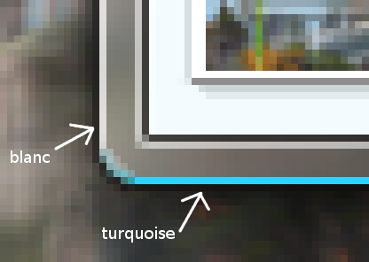

Vous avez sans doute remarqué le fait que des designers de Windows Vista ont fait un très beau travail.
Ce tutoriel a pour rôle de vous apprendre à recréer Aero à votre guise. Il est très facile de faire ceci avec Photoshop. Mais ceux qui n'ont pas voulu télécharger ledit logiciel ou qui ne veulent pas l'acheter peuvent très bien s'en sortir avec GIMP.
Vous pourrez comme cela l'utiliser pour votre site, votre logiciel, ou pour ce que vous voulez.
Il fallait bien un chapitre d'introduction, alors je mets ci-dessous quels outils de GIMP nous allons nous servir :
Sélection ;
Masque rapide ;
Dégradés ;
Chemins ;
Et c'est tout !
Ouais mais y'a pas grand-chose de plus sur ce logiciel...
Ce n’est pas faux. En fait, GIMP est un logiciel "bas niveau", c'est-à-dire qu'il ne dispose que d'outils basiques, mais quand on sait s'en servir, on peut faire plein de choses.
Oui bon... je ne sais pas trop comment ça s'appelle, alors j'ai mis ce titre-là. Pour mieux voir ce dont il s'agit, voici un petit screenshot venant tout droit de mon bureau :
Le sélecteur de fenêtres sur Vista (ALT + TAB)
Et nous allons recréer ça :
Ce n'est pas bien compliqué : Il ne s'agit que d'un rectangle arrondi à fond translucide, un flou, une bordure bicolore, et une ombre floue et marquée.
Pourquoi une bordure bicolore ?
Je ne sais pas si vous avez déjà remarqué, mais sur la fenêtre active les bordures hautes et gauches sont blanches et bas et droites sont turquoise.

Le coin bas-gauche d'une fenêtre sous Vista
Eh bien pour les fenêtres translucides, c'est pareil. Mais si vous regardez sur le screenshot que j'ai fait plus haut, il n'y a pas de bordure bleue.
Donc ne mettez cette bordure bicolore seulement si vous le voulez. Ce n'est en rien une obligation, vous pouvez très bien faire une bordure blanche.
Allez, au boulot!
Créez une image gimp (de la taille que vous voulez). Vous pouvez mettre un fond transparent, ou une image de fond.
Préparation du plan de travail
Vous connaissez les guides ? Ils vous seront très utiles !
Vous devriez placer 4 guides qui délimiteront le cadre (sans l'ombre). Vous pourrez ainsi retrouver facilement la sélection de base (pensez à activer le magnétisme des guides !).
Personnellement, j'ai laissé 40 pixels de chaque côté.
Le plan de travail
Pour que vous soyez à l'aise avec tout, je vous conseille d'afficher les fenêtres ancrables : calques - canaux - chemins - historique d'annulation Vous pouvez les fusionner, tout ce que vous voulez, mais elles sont très utiles, et à mon avis, pas que pour ce tutoriel.
Pour obtenir un rectangle arrondi, il existe une option dans le menu de sélection rectangulaire. Pour cela prenez l'outil de... sélection rectangulaire ! Dans le menu de l'outil (juste en-dessous de la boîte à outils), cherchez un peu l'option "coins arrondis". Activez-la et prenez un rayon quelconque. Par défaut, c'est 5 pixels. Chaque sélection rectangulaire que vous ferez aura ses coins arrondis avec le rayon donné. Celui des fenêtres de vista, c'est 6 ou 7px (Prenez celui que vous voulez).
Lorsque vous ne voudrez plus arrondir vos sélections, le mieux sera de décocher l'option coins arrondis, car vous conserverez le rayon.
Ci-contre l'outil de sélection rectangulaire, paramétrée correctement.
Selon la taille de votre rectangle, la mesure du rayon en % sera différente. Il faudra donc comparer avec les arrondis des vraies fenêtres de Vista et trouver le bon rayon (et une fois trouvé, il est conseillé de la noter quelque part).
Pour l'exemple de ce tutoriel (un rectangle de 220x120 px), le rayon approprié est 9% (enfin, moi j'ai pris 9%, après vous faites ce que vous voulez). Rien ne vous interdit de prendre un rayon plus grand ou plus petit (ou ne pas arrondir le rectangle aussi).
Voilà votre sélection principale, c'est celle dont nous allons nous servir le plus, celle-ci et une autre : identique, mais réduite de 1px. Vous avez deux choix : soit transformer cette sélection en chemin pour la retrouver plus facilement, soit la retrouver tout seul à chaque fois. Personnellement, je choisis la 2e option, car la première peut s'avérer parfois imprécise. (Je vous rassure, la différence se voir à peine à l'œil nu :p ) Et puis retrouver cette sélection ne sera pas difficile grâce aux guides.
Allez, on attaque la bordure :pirate: !
La bordure bicolore (ou pas)
Donc d'abord, créez deux nouveaux calques : "bordure blanche" et "bordure bleue" (je me servirai de ces deux noms pour les distinguer par la suite). Prenez la sélection arrondie principale, et remplissez-la de blanc (dans le calque "bordure blanche"). Dans le deuxième calque, remplissez cette même sélection de la couleur #2cd3fe.
Ensuite, placez le calque "bordure bleue" au-dessus de "bordure blanche".
Ensuite on veut que le bleu apparaisse en bas et à droite. On va donc faire une sélection en diagonale. Il faudra ensuite utiliser le masque rapide.
Hein ? Le masque rapide ? C'est quoi ça ?
Le masque rapide est un simple et bon moyen d'éditer la sélection comme on veut.
Cela permet de transformer la sélection en calque de niveaux de gris Vous pouvez ensuite "peindre" dans ce calque pour modifier la sélection. L'avantage c'est que ce calque peut être modifié tout comme un calque normal, on peut donc lui appliquer des filtres, des motifs, etc. Il suffit de désactiver le masque rapide ensuite pour transformer le calque en sélection. Cela permet de plus les sélections translucides, en effet si le masque rapide contient du gris, la sélection obtenue avec ne sera pas totalement opaque !
Donc nous allons créer notre sélection en diagonale grâce au masque rapide.
Hé attends une minute, c'est quoi cette histoire de sélection translucide?
C'est une bonne question qui est difficile à aborder. Vous le savez peut-être déjà, mais la sélection correspond à la partie de l'image qui sera affectée par tout ce que l'on fait avec GIMP.
Mais enfaite, la sélection dans GIMP, bien qu'elle apparaisse comme un contour en pointillés, est un calque en niveaux de gris. Dans ce calque, tout ce qui est blanc fait partie de la sélection. Ce qui est noir en est exclus.
Cependant, les niveaux de gris ne se limitent pas qu'a deux couleurs : en effet ils incluent toutes les nuances de gris qu'il peut exister (254 en tout). Imaginez qu'un pixel de notre sélection soit gris moyen, il serait à la fois dans la sélection et en dehors.
Ben c'est un peu comme ça que cela fonctionne : les modifications apportés à un sélection grise ne seront pas opaques, elles seront translucides (d'où le nom de sélection translucide). C'est un peu comme quand on règle l'opacité d'un calque à 50%. On le voit moins, et on peut voir derrière les autres calques. Plus la sélection sera claire, plus les modifications qui lui seront apportés à l'image seront opaques; à l'inverse, plus elle se rapproche du noir, moins elles se verront.
C'est là toute la force du masque rapide : éditer l'intensité des modifications faites à l'image ! Et croyez-moi c'est très très utile !
Donc j'en étais où déjà? Ah oui, nous allons créer notre sélection en diagonale grâce au masque rapide.
Là, encore deux solutions :
Soit on active directement le masque rapide et on applique un dégradé noir/blanc en essayant de bien viser,
Soit on fait d'abord notre sélection diagonale, et on lui applique ensuite un flou avec le masque rapide.
Cela va sans dire que la deuxième solution est la meilleure. Prenez donc l'outil sélection à main levée, et faites une diagonale comme cela :
Diagonale (zoom x2) Ensuite, fermez la sélection par le haut :
La sélection, la vraie
Ensuite, activez le masque rapide, sélectionnez tout, et appliquez un flou gaussien (5px doivent suffire pour avoir un bon rendu, bien entendu, plus l'arrondi est grand, plus le rayon devrait être grand).
Ensuite, retirez le masque rapide pour voir votre belle sélection en pointillés...comme celle d'avant !
Super, j'ai une sélection qui n'a pas changé et je ne sais pas quoi en faire !
Bien sûr que si elle a changé, maintenant elle est floue! Prenez le calque "bordure bleue", et enlevez la sélection (touche suppr)... Et admirez ! Votre beau rectangle bleu et blanc. Bon c'est toujours pas une belle bordure, mais bon on n'a plus grand-chose à faire pour l'avoir.
Fusionnez les deux calques de bordure. Et ensuite reprenez la sélection du début : le rectangle
Ensuite réduisez la sélection de 1 pixel (menu/sélection/réduire) Et après, arrondissez ça. Utilisez le même rayon (dans mon cas 9%).
Vous pouvez appuyer sur suppr.
Vous voilà avec votre belle bordure bicolore !
Une belle bordure toute fraiche !
Le fond
Cette partie va être très courte. Il faut prendre la couleur que vous voulez pour le fond (prenez dans les tons bleus ça rend mieux, en effet si vous prenez du rouge la bordure bleue ressortira un peu trop :-° ...) Personnellement, j'ai pris #93c0ce. Prenez l'outil de remplissage et mettez l'opacité vers 40% (c'est la valeur que j'ai prise, vous pouvez en prendre une autre). Ensuite, ben remplissez.
Le flou du fond
Simple, toujours avec la même sélection que pour le fond translucide, sur le calque du fond (si vous en avez un), juste un petit flou gaussien. Sur le screenshot du début, j'avais mis le flou à 6px. En réalité, il faut mettre plus, pour qu'il se voit. Mettre un flou de 10px me parait raisonnable.
Notre cadre commence à ressembler à quelque chose !
Les ombres
Pour avoir une belle ombre de contour, il en faudra deux. Qui dit deux ombres dit... Deux calques !
Bon deux calques : "ombre forte" et "ombre faible". Placez "ombre forte" au-dessus de l'autre. Ensuite il faut créer le chemin qui servira à "tracer" l'ombre.
Pour faire cela, rien de plus simple, sélectionnez votre rectangle de base (celui des guides dont je vous ai parlé au début), arrondissez-le (comme pour la bordure), et allez dans menu/sélection/vers chemin. Et voilà, vous avez votre chemin !
bon ensuite le plus difficile c'est de ne pas faire une ombre trop marquée, mais assez pour qu'elle se voit. L'ombre des cadres Vista est en fait composée de deux ombres : une qui accentue le contour blanc et bleu, et l'autre qui est plutôt faible et qui est là juste pour faire beau.
Prenez le calque "ombre forte", et prenez une couleur noire en couleur de premier plan.
Sélectionnez tout le calque (Ctrl + A) et tracez le chemin avec une épaisseur de 3px, ou 2.5px, au choix.
Tracer le chemin? Qu'est-ce que tu nous invente encore? :colere2:
Ah oui j'ai oublier de vous expliquer... :-° Pour tracer un chemin, il faut se rendre dans la fenêtre ancrable chemins. (voir ci-contre) Là, vous pouvez voir le petit icône de traçage de chemin, que j'ai joliment indiqué. Euh, pensez à cliquez sur le chemin que vous voulez tracer avant (il doit être surligné en bleu, sur mon screenshot, il l'est en gris clair... Remarquez, ça marche aussi quand il l'est en gris clair...)
Il y a alors une petite fenêtre qui s'ouvre :
Normalement à partir d'ici vous comprenez tout : vous pouvez le tracer simplement avec un ligne de la couleur de PP (premier plan) ou de celle d'un motif, ou alors utiliser un outil que vous aurez paramétré au préalable.
Pas si compliqué que ça en a l'air, non?
Notre première ombre
Hé mais l'ombre va aussi à l'intérieur ! Et du coup on voit plus la bordure !
On règlera cela ensuite, on va d'abord s'occuper de l'ombre faible. Dans le calque "ombre faible", sélectionnez tout, et prenez la brosse Circle Fuzzy (19) avec l'outil pinceau. Il est conseillé d'augmenter l'échelle de la brosse à 1,5. N'oubliez pas de prendre une couleur noire avant de tracer le chemin en utilisant l'outil pinceau. Ne cochez PAS la case "émuler une brosse dynamique".
Maintenant, il faut ajuster l'opacité des deux calques. Moi je prends 70% pour "ombre forte" et 50% pour "ombre faible".
Une grosse ombre, comme on n'en fait plus
Vous pouvez ajuster cette opacité comme bon vous semble, peut-être vous trouver un couple qui ressemblera encore plus à celui de Vista.
Maintenant on doit enlever l'ombre qui est à l'intérieur du cadre. Fusionnez les deux calques "ombre forte" et "ombre faible". Dans le calque obtenu, sélectionnez le rectangle principal (encore celui des guides). Arrondissez-le comme vous l'avez fait avant (avec le même rayon). Normalement, vous vous retrouvez avec la même sélection que la bordure. (Elle devrait d'ailleurs être masquée par les pointillés de la sélection) Et ensuite, appuyez sur Suppr pour supprimer le contenu de la sélection.
Notre beau cadre, enfin terminé !
Voilà, c'est tout ! Vous savez comment on fait un beau cadre façon Vista.
Idées d'amélioration
Oui, ce tutoriel n'est pas vraiment un TP, mais ce sont tous les petits détails en plus qui font que notre cadre est beautiful. Et les idées sont nombreuses :
Il serait bien de faire des reflets sur le fond comme Vista, ce ne sont que des rayures blanches obliques et floues (et translucides aussi)
Vous pouvez faire un trou dans ce cadre, ou encore lui faire prendre des formes bizarres
Vous pouvez changer les couleurs de la bordure bicolore, pour qu'elle rendre mieux sur un cadre rouge, par exemple
Ou mieux, rien ne vous interdit de faire une bordure avec plus de couleurs ! Essayez avec une bordure arc-en-ciel, rien que pour voir !
Et si vous le voulez, mettez un dégradé translucide au lieu d'une couleur unie à l'intérieur du cadre
Mieux encore : Créez une vraie fenêtre de Vista, vous savez faire, il suffit de vider votre cadre au milieu avec une bordure blanche arrondie d'un pixel, doublé d'une bordure noire.
Bon, après la seule limite, c'est votre imagination...
Un autre point important sur Vista, ce sont les boutons. Il y en a plein. Tout plein. Trop.
Encore heureux ils se ressemblent :
Différents boutons de Vista
Ah ouais ? Et en quoi ? Parce que même à la loupe, je ne les vois pas les points communs !
si, si regardez bien ce schéma :
Ah vous voyez le point commun là ?
Ils obéissent tous au même schéma. La seule exception c'est le troisième bouton. Il n'a pas de bordure claire extérieure.
Alors tout de suite plus simple, non ?
Allez créer une image gimp avec un fond rouge (pour bien que ça se voit), moi je mets 200x32 pour les dimensions.
Créez ensuite un calque "bordure ext" (comme extérieur). Vous aurez aussi besoin d'un calque "bordure int" (comme intérieur) et "bordure foncée" comme... bordure foncée.
Ils doivent être dans l'ordre suivant : "bordure ext" au-dessus de "bordure foncée", au-dessus de "bordure int".
Créez ensuite un calque "centre" que vous mettrez entre le calque de fond rouge et "bordure int".
Vous suivez toujours ? Allez, pour récapituler, je mets un screenshot de mon arbre des calques :
L'arbre des calques que vous devriez avoir
Notre plan : créer les bordures petit à petit, selon les sélections dont nous disposons.
Sur le calque "bordure ext", sélectionnez tout, et faites une sélection arrondie d'environ 20% pour les dimensions que j'ai prises.
Remplissez cette sélection de blanc. Ensuite, toujours dans le même claque, re-sélectionnez tout, puis réduisez la sélection de 1px. Arrondissez la nouvelle sélection avec le même pourcentage (moi j'ai 20%). Dans le calque "bordure ext", appuyez sur suppr. Dans le calque "bordure foncée", remplissez la sélection de noir.
Vous avez fini votre bordure claire et commencé la bordure foncée.
Citation : Moi, il y a environ 30 secondes
On est parti de la sélection de base, arrondie de 20% car on a pas envie d'un bouton carré. On l'a rempli de blanc, c'est le contour extérieur.
Ensuite, comme on veut une bordure et non pas un rectangle, on a voulu vider son contenu. Pour faire cela, on a repris notre sélection de base, mais réduite de 1 pixel. Il nous a suffit d'appuyer sur suppr pour supprimer le contenu de la sélection, autrement dit garder une bordure blanche de 1 pixel d'épaisseur.
Par hasard, on avait en main la bonne sélection pour commencer la bordure foncée... Et vous allez voir que la manipulation est identique, à l'exception qu'elle est réduite de 1 pixel.
Dans "bordure foncée", sélectionnez tout, ensuite réduisez la sélection, mais de 2 pixels cette fois-ci. Arrondissez cette sélection comme les autres,et appuyez sur suppr. Passez dans le calque "bordure int". Remplissez-y la sélection de blanc.
Toujours dans le même calque, sélectionnez tout, réduisez la sélection de ... 3 pixels, et arrondissez-la comme avec les autres. Appuyez sur suppr, et passez dans le calque "centre".
Voici, ce que vous devriez obtenir avec ce que je vous ai dit:
Notre bordure, mais... mais elle est horrible !! (zoom x2)
Maintenant il nous faut notre dégradé. Le principe, c'est qu'il doit avoir ce schéma:
Bien entendu les deux couleurs "moyen" ne sont pas les mêmes.
Pour créer ce dégradé simplement, il faut dupliquer le dégradé "french flag smooth". (voir ci-contre) L'éditeur de dégradé s'ouvre alors. Pensez à agrandir la fenêtre pour y voir plus clair.
Ensuite pour chacune des deux parties du dégradé, changez les couleurs pour avoir quelque chose dans le genre :
Mon dégradé pour le bouton Vista
Pour modifier les couleurs d'un dégradé, il faut cliquer sur un des deux segments de celui-ci (il y a des dégradés avec plus de 2 segments, mais dans notre cas, c'est deux). Ensuite, une fois le segment voulu en bleu (voir le screenshot ci-dessus), faites clic droit/couleur de l'extrémité gauche ou clic droit/couleur de l'extrémité droite Rien ne vous interdit aussi de fouillez dans le menu du clic droit comme par exemple utiliser la couleur de PP ou d'AP...
Enfin, enregistrez votre travail.
Ensuite, vous devez prendre une bonne sélection. La bonne sélection, c'est celle de la bordure intérieure. Pour la retrouver, sélectionnez tout, réduisez la sélection de 2px, et arrondissez-la avec le même rayon que les autres.
Normalement vous l'avez gardée, mais bon on ne sait jamais... Une coquille est si vite arrivée :p ...
L'application du dégradé, ne dépassez pas la sélection !
Sur mon image mon dégradé fait donc 32-(2*2) pixels de hauteur soit 28px. La bordure claire intérieure mange donc un peu sur le dégradé. C'est normal, car cette bordure va être translucide. C'est d'ailleurs la prochaine étape.
Maintenant, il est temps de rendre tout cela translucide ! Sélectionnez "bordure ext". Passez l'opacité du calque vers 50%. Sélectionnez "bordure foncée" et passez son opacité vers 80%. Sélectionnez "bordre int" et passez son opacité vers 30 ou 40%. Sélectionnez "centre" et passez son opacité à 80%. Vous pouvez aussi le laisser complètement opaque.
C'est fini.
Voilà le résultat :
Bon, le fond est rouge vif... Mais sinon c'est beau.
Vous savez maintenant faire des beaux boutons Vista.
Hé mais, je croyais qu'il y avait plusieurs boutons différents ! Et le bouton blanc alors ?! Tu ne nous le fais pas ?
Ils sont tous différents, mais suivent le même mode de fabrication. Sauf, le bouton blanc, mais les différences ne changent pas grand-chose :
Il n'y a pas de bordure claire extérieure, mais ce ne devrait pas être source de problèmes...
Voici un chapitre, certes peut-être pas très utile comparé aux autres, mais qui fait un bon petit TP.
notre but sera de réaliser un dossier comme ceux de Vista, à savoir un truc du genre :
J'y crois pas que j'ai pas un truc aussi beau que sur Vista ! Alors? Bluffant, non?
Alors bien sûr, je vous voir venir...
Hein??? Mais t'es fou ! Comment tu veux qu'on fasse un truc pareil avec GIMP ? C'est ultra détaillé ton truc !
Calmez-vous, voyons, c'est pas comme ça qu'on fait du beau travail. :p
Ça vient de CrystalXP, c'est pas moi qui ait fait ça bien sûr :-° Heureusement pour vous j'ai prévu le coup, en effet il est très difficile de refaire ceci à partir de rien, que ce soit avec GIMP ou Photoshop. Je met ce chapitre car on va utiliser une technique très pratique nommée le découpage de calque.
Il faut partir d'un base. Et cette base, c'est le dossier. Copiez l'image ci-contre dans GIMP.
Elle est au format png. Par ailleurs, je vous conseille d'augmenter la taille de l'image en longueur : menu/Image/Taille du canevas
Parfait une fois ceci fait, vous devez prendre une autre image qui sera l'icône du dossier. Moi j'ai pris un beau petit Wilber, qui est, pour votre culture générale, la mascotte de GIMP.
Il est beau Wilber ! C'est une miniature, l'image en vrai fait 512x512 pixels, ce qui est donc un peu grand pour notre icône à nous... Il va donc falloir réduire notre image de Wilber pour qu'elle fasse 255x255 pixels, ça vous savez faire je pense...
Non? Eh ben ch'ui pas rendu, moi ! :p
Vous pouvez utiliser l'outil de redimensionnement, rien de plus simple.
Bon, pas trop dur jusque là? Parce que même si c'était le cas, ben je m'en foutrais et je continuerais quand même ! :p
Passons aux choses sérieuses!
Après avoir positionné vos calques correctement (que votre Wilber ou autre truc est bien positionné par rapport au dossier), on peut commencer le découpage!
Prêt à attaquer le découpage !
Il faut qu'un partie de notre Wilber soit derrière une partie du dossier... Or là, on peut s'y prendre de plusieurs façon différentes :
On peut découper une partie du nez de Wilber et le placer en-dessous du calque du dossier
On peut aussi découper une partie du dossier et le placer au-dessus de notre Wilber
Enfin, on peut découper une partie du nez de Wilber et réduire son Opacité
Il faut savoir que le rendu est sensiblement différent selon quelle méthode on utilise. Cependant, il y en a une qui donne un meilleur effet que les deux autres... Je vous laisse deviner...
Malgré le fait qu'on ne peut insérer de QCM en plein milieu du chapitre, je vais simplement donner la réponse...
C'est la n°2 !
Si vous vous demandez pourquoi... Ben c'est normal. Enfaite la n°1 et la n°2 donnent le même résultat au final. la différence c'est qu'avec la n°2 vous pourrez changer l'image du dossier en un clin d'œil! Ainsi vous pourrez plus facilement créer plusieurs dossiers d'affilée ou les modifier s'ils ne vous plaisent pas.
Donc pour notre découpage, on commence par sélectionner la région à découper : La sélection dont on a besoin (cliquez pour agrandir)
Ensuite, on va faire un couper-coller dans un autre calque. Donc coupez la sélection (Ctrl + X) puis collez-la simplement (Ctrl + V). Là, normalement, vous avez une sélection flottante. C'est un calque temporaire qui contient le presse-papier collé en attendant de l'ancrer dans la calque où il était. On peut donc le modifier avant de le coller définitivement. Or nous, on ne veut pas l'ancrer, mais le coller dans un nouveau calque. Mais ça, GIMP sait faire, il suffit de cliquer sur nouveau calque (voir ci-contre).
Ensuite, il nous suffit de placer ce nouveau calque au-dessus de celui de Wilber et de placer l'autre calque du dossier en-dessous de ce dernier.
Les guides de gimp sont les lignes magnétiques placées entre les pixels. Presque tous les outils manuels (ceux que vous utilisez avec la souris) y sont guidés lorsque vous en approchez un. Placer un guide c'est très simple, il faut placer votre curseur sur une des règles en haut ou à gauche, et cliquer-glisser vers l'image pour placer le guide. Dans la barre d'état, on voit à combien de pixels du bord on place le guide, ce qui permet de placer nos guides avec précision.
Pour déplacer un guide, il faut prendre l'outil de déplacement et mettre son pointeur dessus (le guide devient rouge). Ensuite, vous pouvez cliquez-glisser pour le placer où vous le voulez.
Si vous déplacez un guide en dehors de l'image, il sera supprimé. Si vous avez beaucoup de guides, vous pouvez tous les supprimer dans menu/images/guides/enlever tous les guides.
Vous pouvez créer automatiquement 4 guides autour de la sélection dans ce même menu. Cela peut s'avérer très utile, par exemple pour conserver une sélection rectangulaire et la retrouver facilement, chose qui est assez utilisée dans ce tutoriel, sauf que dans celui-ci, les guides ont été placés manuellement, car on voulait des coordonnées précises.
Si les guides vous encombrent la vue, vous pouvez les masquer en désactivant menu/affichage/afficher les guides ou en faisant Ctrl + Maj + T Vous pouvez aussi désactiver leur magnétisme dans menu/affichage/aligner sur les guides.
Ces outils sont très pratiques, et parfois indispensables, donc utilisez-les sans modération !
Le masque rapide
Le masque rapide est un outil extrêmement puissant, il vous permettra de créer n'importe quelle sélection, et de les modifier. Le principe est le suivant :
Le masque rapide est un calque qui est significatif de la sélection. Ce qui est blanc fait partie de la sélection, ce qui est noir n'en fait pas partie. Ce qui est gris est une sélection translucide.
Le mieux pour comprendre, c'est toujours de pratiquer.
Lorsque vous quittez le masque rapide, le calque est transformé en sélection. Le seul hic, c'est que la sélection en pointillés ne peut pas afficher les niveaux de sélection. Il faut donc savoir que la sélection en pointillés n'entoure que les pixels qui sont d'un gris inférieur ou égal à 50% (du gris 50% au blanc).
Cependant si vous utilisez un outil et que vous peignez en couleur sur le masque rapide, la couleur sera automatiquement convertie en niveau de gris.
Vous pouvez, comme tous les autres calques ou canaux, masquer le masque rapide sans le désactiver pour autant. Il suffit pour cela d'aller dans la fenêtre ancrable des canaux et de cliquer sur l'œil en face du masque rapide.
Ceci ne désactive pas le masque rapide ! Vous pouvez continuer de l'éditer, même masqué, comme vous pouvez éditer vos calques même si le masque rapide est activé.
Les chemins
Un chemin, c'est très utile. GIMP n'est en fait pas vraiment conçu pour dessiner des formes.
Et pourtant un chemin, c'est une forme. Une forme que vous pouvez éditer, construire, à partir de rien, avec l'outil approprié. L'outil chemin de GIMP est utile, mais pas complet. Cependant, GIMP peut importer un chemin créé avec un logiciel externe. Mais en général, l'outil chemin suffit largement.
Un chemin ne modifie pas les pixels ! C'est juste une forme que vous pourrez utiliser de différentes façons :
transformer le chemin en une sélection (avec lissage)
Dessiner le chemin par un trait ou un motif de trait (par exemple les pointillés)
Dessiner le chemin en utilisant un autre outil paramétrable (c'est le logiciel qui le fait automatiquement, bien sûr)
Et aussi écrire du texte en suivant le chemin
Et plus encore...
Les chemins sont donc très pratiques, et peuvent parfois servir à conserver une sélection : en effet, il est possible de transformer une sélection en chemin (on perd les sélections translucides), et de retrouver la sélection à partir de ce chemin. Il est aussi possible de modifier un chemin obtenu à partir d'une sélection.
Le format XCF
Cette partie n'est pas abordée dans les chapitres précédents, mais j'ai trouvé utile de la mettre ici.
Par défaut, GIMP enregistre vos images avec le format .xcf. Ce format enregistre votre travail tel qu'il était. Il conserve donc tous les chemins, guides, sélections. Si vous enregistrez votre travail quand vous utilisez le masque rapide, celui-ci est aussi sauvegardé.
Il sauvegarde aussi des choses bizarres comme l'outil que vous utilisiez quand vous avez enregistré votre image (si vous utilisiez l'outil perspective, vous retrouverez votre travail avec l'outil perspective sélectionné).
La seule chose que GIMP n'enregistre pas, c'est l'historique d'annulation. C'est à dire que vous ne pourrez pas annuler les modifications faites sur votre image une fois précédente.
Voilà, c'est une partie de Vista, ce que vous faites, là. Mais ce n'est pas tout. Plus tard vous pourrez reproduire des dossiers, des barres de chargement, des barres de tâches, etc.
Mais en attendant, il y a ça, et c'est déjà pas mal.


{kind=link}
{kind=link}
{kind=link}
{kind=link}